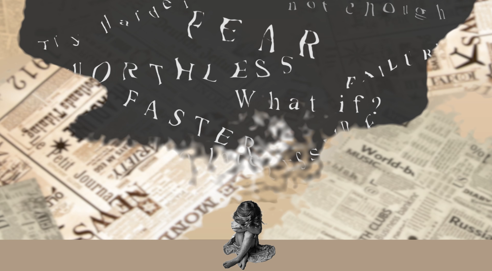

Motion Design · Animation
Motion Studies
A short motion design project about the invisible conversations we have with ourselves. Negative thoughts take shape as drifting words and smoke before gradually fading away.

When
thoughts become visible
The project began with the idea of making internal thoughts visible. I explored different visual approaches before settling on a smoke-like form that carries words such as “hopeless” and “too late” above the character. Through animation, the thoughts gradually lose their hold and dissolve together with the smoke.
- Concept development
- Storyboarding & visual planning
- Typography animation
The series is being curated
The work is being selected and prepared for the web. Instead of placeholder mock-ups, this page is kept clean until the real pieces are ready to be shown. Curious in the meantime?